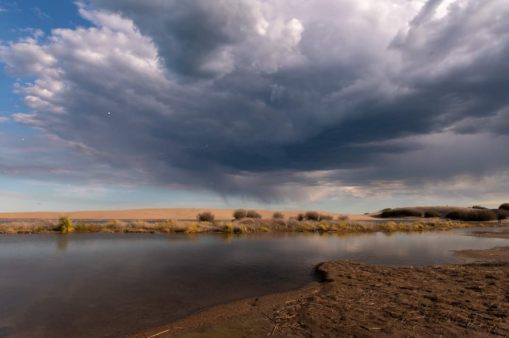
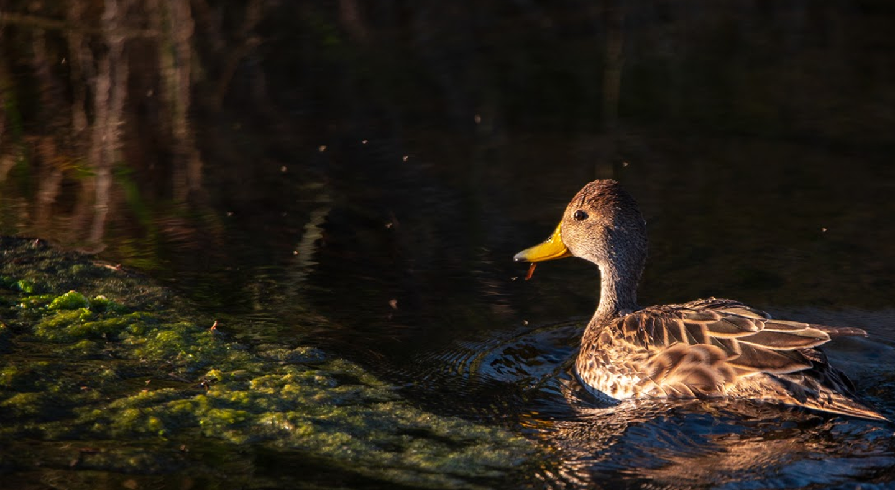
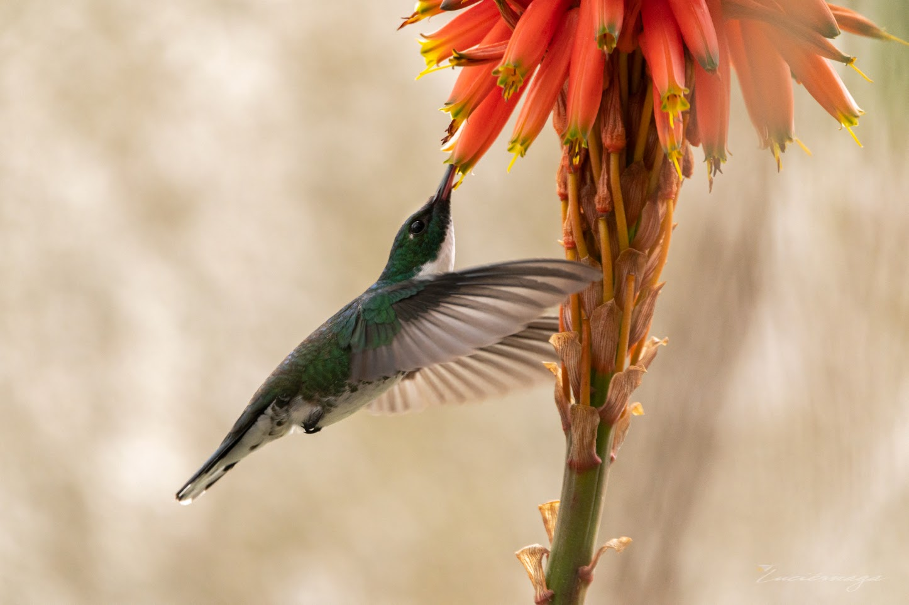

Albúfera
El mar y el río convergen en un ecosistema único.
Una laguna próxima a la costa, formada por agua salada y dulce, separada del mar por una lengua de arena de playa, es una rareza natural como hay pocas en el planeta.
Leer más
Su entorno de juncales y pastizales costeros es refugio de una gran biodiversidad. Destaca por la observación de aves como flamencos rosados, patos silvestres, garzas y chorlos.
Te invitamos a conocerla en profundidad.
Explorá la albuferaEspacios diversos que conviven en perfecto equilibrio.

El mar y el río convergen en un ecosistema único.
Una laguna próxima a la costa, formada por agua salada y dulce, separada del mar por una lengua de arena de playa, es una rareza natural como hay pocas en el planeta.
Leer más
La extensa orilla del océano Atlántico.
Un ambiente dinámico donde las mareas, el viento y la arena modelan el paisaje y sostienen distintas formas de vida.
Leer más
Un resguardo ante los fuertes vientos.
Sus arenas y plantas adaptadas contribuyen a la dinámica costera y ofrecen refugio a numerosas especies.
Leer más
Los ambientes naturales de Reta albergan una gran diversidad de especies y cumplen un papel fundamental en el equilibrio del ecosistema. Conocer su valor es el primer paso para reconocer las amenazas que enfrentan y promover su cuidado.
Profundizá en los desafíos de conservaciónCompartimos hogar con muchísimas especies.

Ave asociada a humedales y orillas, donde busca peces y pequeños animales.
Leer más
Pequeña ave que se alimenta principalmente del néctar de las flores.
Leer más
Ave rapaz que contribuye al equilibrio de las poblaciones de pequeños animales.
Leer más
Ave acuática que puede observarse en ambientes costeros y lagunas.
Leer más
Pequeño mamífero subterráneo adaptado a los suelos arenosos.
Leer másDescripción general en preparación.
Leer másLa iniciativa se vuelve acción.

Somos un equipo de personas autoconvocadas dedicadas a conocer, documentar y difundir la riqueza natural de Reta. Buscamos generar conciencia sobre el valor de sus ambientes y promover su conservación.
¿Te interesa ayudarnos? Podés sumar tus observaciones, compartir información o contactarnos para colaborar con la iniciativa.